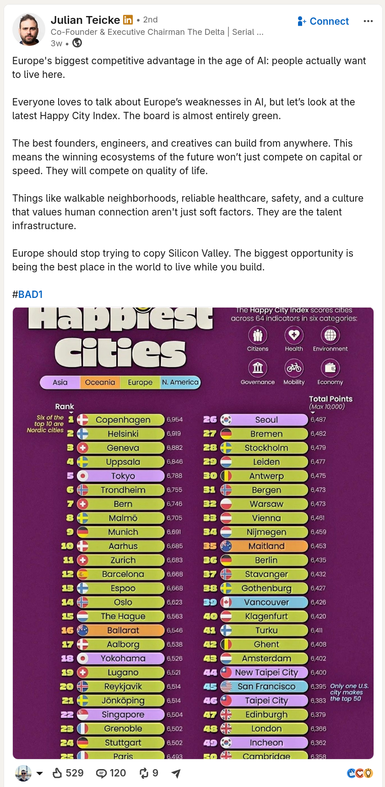

A few months ago, Julian Teicke, a key figure in the Berlin startup ecosystem, posted on Linkedin that Europe's main competitive advantage is its quality of life and overall happiness of citizens (screenshot below). "The best founders, engineers, and creatives can build from anywhere. This means the winning ecosystems of the future won’t just compete on capital or speed. They will compete on quality of life." [Source↗].
In my opinion, this position is wrong and built on a misconception of many true innovators' motivations. Below, I critize this line of thinking from two angles: (1) the cited study as valid argumentative basis and (2) my, although just anecdotal and therefore hardly final and objective, personal experience from interacting with many internationals.

(1) The Happiest City Index has a eurocentrist bias
If you look into the actual methodology↗, you'll first find that this index is purely academic. They didn't do a survey of people in all those cities and ask them how happy they are. The index is calculated from a set of indicators trying to measure city-level policy performance, country-level indicators for an individual's quality of live and its national context, as well as a relative rating of all evaluated cities across further economic, environmental, health, and mobility indicators. Select examples are:
- Population Covered by Medical Insurance (%)
- Average Number of Paid Vacation Days
- Population Able to Communicate in a Foreign Language (%)
- Employment in Creative Industries (%)
It is obvious from the definition of the metrics that they favor cultures, countries, and cities with highly developed, international economies and strong public social security systems - something very typical for contemporary European societies. The problem is that it implicitly assumes that today's European model is the only real way to happiness, a very eurocentric view of the world and the human experience. It shouldn't be surprising that European cities end up at the top of the ranking. Less developed economies which cannot afford such policies or countries with different societal models are, by definition, less happy.
Let's illustrate this problem with an example: Imagine a country which has no medical insurance and paid vacation days, where people can communicate only in their native language, and nobody is employed in creative industries. According to the index, these people must be miserable. But what if citizens earned enough money to take time-off whenever they need and want, and medication and treatment became so available and affordable that you can pay almost everything out of pocket while the remainder is covered by the government? Or you have a scenario where everyone lives off a generous Universal Basic Income and there isn't "employment" at all anymore, or the penetration of society by real-time AI translation tools makes learning other languages largely unnecessary. I could go on... These could all be a scenarios in a world of "abundance", to use the buzzword, and that this index (published by European institutions by the way) implicitly excludes them shows that it is completely useless when speaking about happiness. It looks at policy outputs and questionable correlation proxies, not the actual outcomes.
Unfortunately, similar indices and arguments are often used to justify the current European system and lack of radical reform. This index is just another contemporary European self-reassurance of their supposed moral and cultural superiority. But even if the index properly represented the average happiness of a city's majority population, it is still a flawed argument for why it'll give Europe an advantage in attracting "the best founders, engineers, and creatives".
(2) My anecdotal evidence points another way
During the last years, I have met many very smart, highly educated, and ambitious people. Most of them were looking to the US and planned their exit from Europe in one way or the other. The reasons were always the same: more freedom and financial opportunites to pursue their ambitions, a culture more accepting and supportive of novelty, change, and hard work to pursue dreams. They were looking for freedom to operate, the opportunity to take risks and make a difference on a global scale. Biotech, software, aerospace. Other much more connected and knowledgable voices from the startup ecosystem confirm my impression: investor Michael Jackson posted that, according to his network, the numbers of European founders and startups looking to move to the US dramatically increased in recent years and continues to accelerate [link to post]. According to Teicke and with all the undeniable societal challenges the US is facing these days, the migration should go the other way. Is doesn't.
I also met many people who came to Europe from other parts of the world, and they had almost the exact opposite motivation. The consensus: European life with less work, hustle and achievement culture, and more opportunity for leisure in rather undisrupted historic cities is desirable (homogeneous open-air museum flair was often seen as particularly appealing). Driving change, technologically and also visibly in society, was almost never a motivation, quite the contrary. The prenetration of everyday life with technology was often seen as frightening and "unnatural", one person even telling me that they hope to never see robots anywhere in everyday life. They came from the US, Asia, South America, and the Middle East, looking for safety, predictability, and dolce vita. Citing these qualities is confirming Julian Teicke's post and European attractiveness, and to me they align well with contemporary European majority society. Unfortunately, those are the exact opposite qualities the outliers Europe needs to come and stay seem to value most.
Another thing I recongized is that people prefering Europe seem to have a stronger tendency towards Etatism (the government shall take the lead) while those preferring to leave had a more libertarian baseline, skeptical of top-down state intervention and more inclined towards personal freedom and individual agency. Two opposing political preferences with their own benefits and problems, but the latter definitely showing a larger motivation to take things into their own hands.
Yes, Europe is attractive - but not necessarily for those Europe actually needs.
How can Europe realistically change course?
This is a topic for another essay, but I can already say that I've lost confidence in change within the boundaries of our current political and societal system. There are too many beneficiaries and too much deep-seated conservatism that pushes back against required reform to give the outliers enough space to operate properly. And my strong desire to bulldoze large parts of historic European city centers, to force people to finally become imaginative creators again instead of worshipping achievements of the past, is well known to my friends but unfortunately without larger scale support.
My current hypothesis is that Europe needs to build its own even more radical version of Silicon Valley or Shenzhen, a special zone where most regulatory burdens and requirements are non-existent and things can play out in a way too radical, organic, and dynamic than the European majority can handle. A new city, built from scratch, that bypasses the mentality of incrementalism, continuity and heritage preservation. Not a place of predictability but constant change. A place where the "crazies" can cluster on a global scale. It must be a place where deep tech innovations from hardware to biotech can go to market and penetrate physical reality quickly to learn and iterate in the field without having to prove their perfect safety first, where the mindset is focused more on proactive creative destruction and pioneering spirit than preservation, sovereignty struggle, and reactive fear-driven activism.
Unfortunately, I think this is a very unrealistic scenario because it would radically break with European decentralization and consensus-driven decision-making. But again, this is something to be explored further another time.